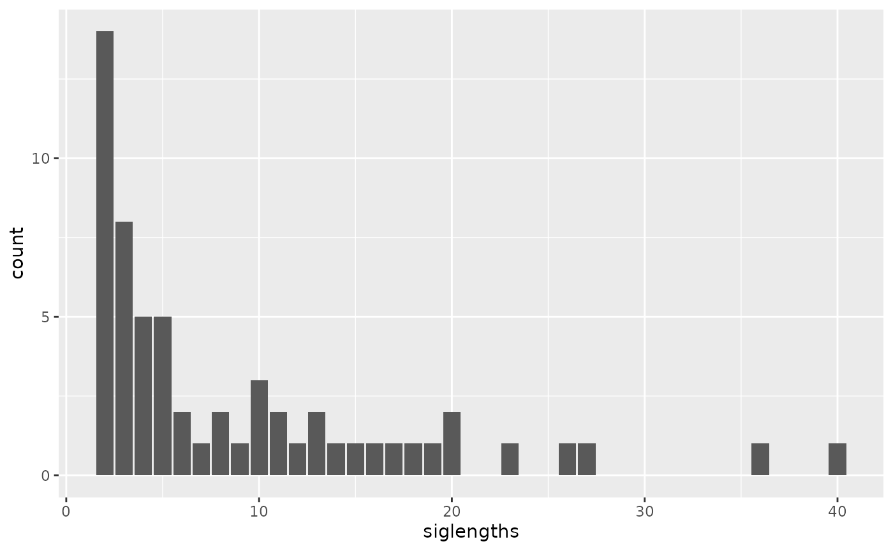
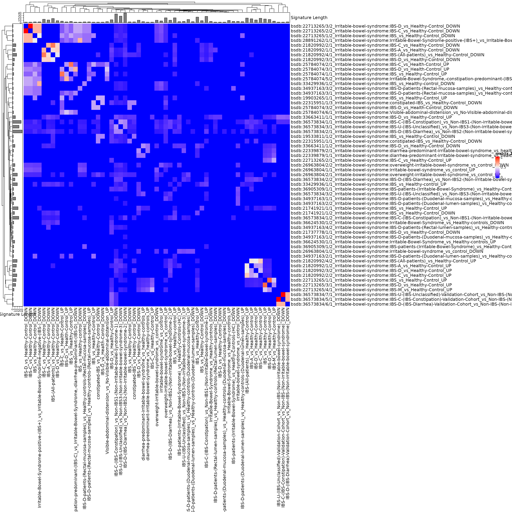
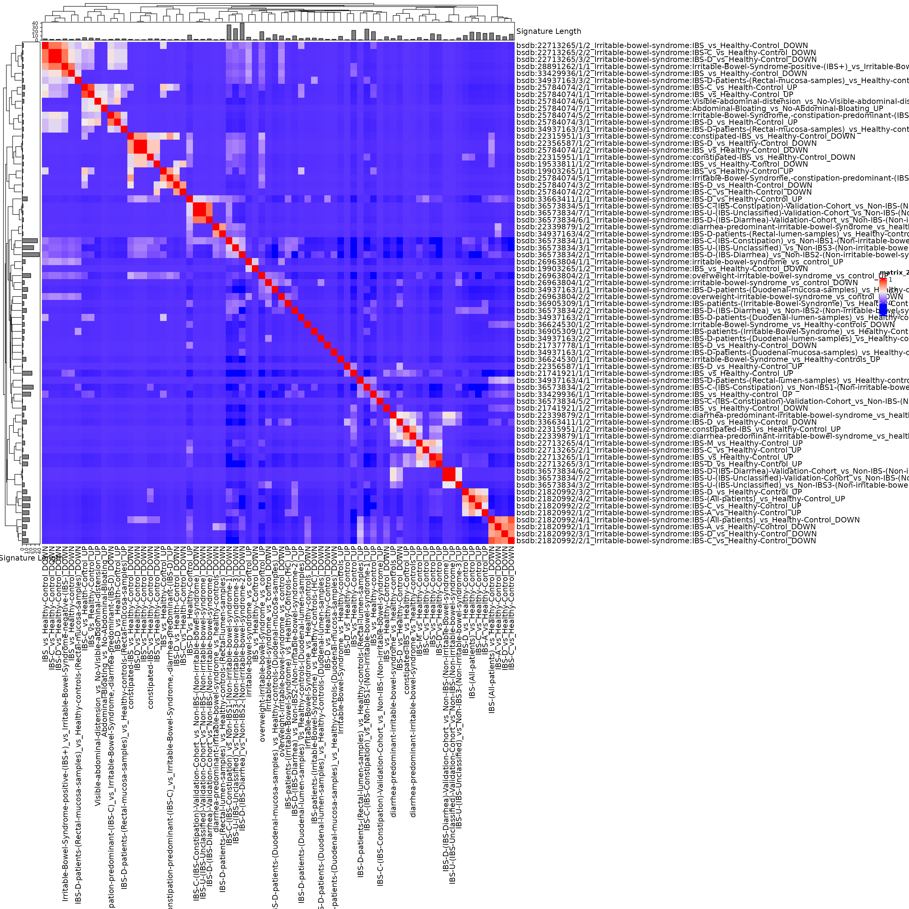

capstoneanalysis_kweku.rmdInstall packages (not evaluated in vignette)
install.packages(c("devtools", "tidyverse", "kableExtra", "gt", "glue"))
devtools::install_github("waldronlab/bugSigSimple")
devtools::install_github("waldronlab/BugSigDBStats")
devtools::install_github("waldronlab/bugsigdbr")
library(bugSigSimple)
dat <- bugsigdbr::importBugSigDB(cache = FALSE)
dim(dat)## [1] 5520 50
names(dat)## [1] "BSDB ID" "Study"
## [3] "Study design" "PMID"
## [5] "DOI" "URL"
## [7] "Authors list" "Title"
## [9] "Journal" "Year"
## [11] "Keywords" "Experiment"
## [13] "Location of subjects" "Host species"
## [15] "Body site" "UBERON ID"
## [17] "Condition" "EFO ID"
## [19] "Group 0 name" "Group 1 name"
## [21] "Group 1 definition" "Group 0 sample size"
## [23] "Group 1 sample size" "Antibiotics exclusion"
## [25] "Sequencing type" "16S variable region"
## [27] "Sequencing platform" "Statistical test"
## [29] "Significance threshold" "MHT correction"
## [31] "LDA Score above" "Matched on"
## [33] "Confounders controlled for" "Pielou"
## [35] "Shannon" "Chao1"
## [37] "Simpson" "Inverse Simpson"
## [39] "Richness" "Signature page name"
## [41] "Source" "Curated date"
## [43] "Curator" "Revision editor"
## [45] "Description" "Abundance in Group 1"
## [47] "MetaPhlAn taxon names" "NCBI Taxonomy IDs"
## [49] "State" "Reviewer"## ── Attaching core tidyverse packages ──────────────────────── tidyverse 2.0.0 ──
## ✔ dplyr 1.1.4 ✔ readr 2.1.5
## ✔ forcats 1.0.0 ✔ stringr 1.5.1
## ✔ ggplot2 3.5.1 ✔ tibble 3.2.1
## ✔ lubridate 1.9.4 ✔ tidyr 1.3.1
## ✔ purrr 1.0.4
## ── Conflicts ────────────────────────────────────────── tidyverse_conflicts() ──
## ✖ dplyr::filter() masks stats::filter()
## ✖ dplyr::lag() masks stats::lag()
## ℹ Use the conflicted package (<http://conflicted.r-lib.org/>) to force all conflicts to become errors
condition_of_interest <- c("irritable bowel syndrome")
efo <- bugsigdbr::getOntology("efo")## Loading required namespace: ontologyIndex
## Using cached version from 2025-03-17 23:38:23
dat_condition <- bugsigdbr::subsetByOntology(dat, column = "Condition", "irritable bowel syndrome", efo) %>%
mutate(comparison1 = paste(`Group 0 name`, `Group 1 name`, sep = " vs "))
bugSigSimple::createStudyTable(dat_condition)## # A tibble: 17 × 5
## Study Condition Cases Controls `Study Design`
## <chr> <chr> <dbl> <dbl> <chr>
## 1 Barandouzi 2021 Irritable bowel syndrome 80 21 cross-sectional obse…
## 2 Biagi 2011 Irritable bowel syndrome 62 46 case-control,prospec…
## 3 Carroll 2011 Irritable bowel syndrome 16 21 case-control
## 4 Carroll 2012 Irritable bowel syndrome 23 23 case-control
## 5 Chassard 2012 Irritable bowel syndrome 14 12 case-control
## 6 Duboc 2012 Irritable bowel syndrome 14 18 case-control
## 7 Fourie 2016 Irritable bowel syndrome 11 20 case-control
## 8 Jacobs 2023 Irritable bowel syndrome 318 177 case-control
## 9 Kerckhoffs 2009 Irritable bowel syndrome 41 26 case-control
## 10 Maccaferri 2012 Irritable bowel syndrome 19 24 randomized controlle…
## 11 Mei 2021 Irritable bowel syndrome 30 30 case-control
## 12 Mertsalmi 2017 Irritable bowel syndrome 18 56 case-control
## 13 Saulnier 2011 Irritable bowel syndrome 28 27 case-control
## 14 Shukla 2015 Irritable bowel syndrome 47 30 case-control
## 15 Su 2023 Irritable bowel syndrome 460 460 case-control
## 16 Tana 2010 Irritable bowel syndrome 26 26 case-control
## 17 Zhu 2021 Irritable bowel syndrome 74 20 case-controlIn this table, the Binomial Test p-value corresponds to the null hypothesis
H0: the proportion of signatures in which the taxon is reported increased or decreased, relative to the total number of signatures in which it is reported, is equal to 0.5
kableExtra::kbl(bugSigSimple::createTaxonTable(gut_sigs))| Taxon Name | Taxonomic Level | total_signatures | increased_signatures | decreased_signatures | Binomial Test pval | kingdom | phylum | class | order | family | genus | species | n_signatures | metaphlan_name |
|---|---|---|---|---|---|---|---|---|---|---|---|---|---|---|
| Bifidobacterium | genus | 9 | 1 | 8 | 0.0390 | Bacteria | Actinomycetota | Actinomycetes | Bifidobacteriales | Bifidobacteriaceae | Bifidobacterium | NA | 14 | k__Bacteria|p__Actinomycetota|c__Actinomycetes|o__Bifidobacteriales|f__Bifidobacteriaceae|g__Bifidobacterium |
| Bacteroides | genus | 8 | 3 | 5 | 0.7300 | Bacteria | Bacteroidota | Bacteroidia | Bacteroidales | Bacteroidaceae | Bacteroides | NA | 15 | k__Bacteria|p__Bacteroidota|c__Bacteroidia|o__Bacteroidales|f__Bacteroidaceae|g__Bacteroides |
| Prevotella | genus | 8 | 0 | 8 | 0.0078 | Bacteria | Bacteroidota | Bacteroidia | Bacteroidales | Prevotellaceae | Prevotella | NA | 9 | k__Bacteria|p__Bacteroidota|c__Bacteroidia|o__Bacteroidales|f__Prevotellaceae|g__Prevotella |
| Enterobacteriaceae | family | 8 | 7 | 1 | 0.0700 | Bacteria | Pseudomonadota | Gammaproteobacteria | Enterobacterales | Enterobacteriaceae | NA | NA | 12 | k__Bacteria|p__Pseudomonadota|c__Gammaproteobacteria|o__Enterobacterales|f__Enterobacteriaceae |
| Dorea | genus | 7 | 5 | 2 | 0.4500 | Bacteria | Bacillota | Clostridia | Lachnospirales | Lachnospiraceae | Dorea | NA | 7 | k__Bacteria|p__Bacillota|c__Clostridia|o__Lachnospirales|f__Lachnospiraceae|g__Dorea |
| Veillonella | genus | 7 | 4 | 3 | 1.0000 | Bacteria | Bacillota | Negativicutes | Veillonellales | Veillonellaceae | Veillonella | NA | 7 | k__Bacteria|p__Bacillota|c__Negativicutes|o__Veillonellales|f__Veillonellaceae|g__Veillonella |
| Faecalibacterium | genus | 6 | 1 | 5 | 0.2200 | Bacteria | Bacillota | Clostridia | Eubacteriales | Oscillospiraceae | Faecalibacterium | NA | 6 | k__Bacteria|p__Bacillota|c__Clostridia|o__Eubacteriales|f__Oscillospiraceae|g__Faecalibacterium |
| Clostridioides difficile | species | 6 | 6 | 0 | 0.0310 | Bacteria | Bacillota | Clostridia | Peptostreptococcales | Peptostreptococcaceae | Clostridioides | Clostridioides difficile | 6 | k__Bacteria|p__Bacillota|c__Clostridia|o__Peptostreptococcales|f__Peptostreptococcaceae|g__Clostridioides|s__Clostridioides difficile |
| Phocaeicola plebeius | species | 6 | 1 | 5 | 0.2200 | Bacteria | Bacteroidota | Bacteroidia | Bacteroidales | Bacteroidaceae | Phocaeicola | Phocaeicola plebeius | 6 | k__Bacteria|p__Bacteroidota|c__Bacteroidia|o__Bacteroidales|f__Bacteroidaceae|g__Phocaeicola|s__Phocaeicola plebeius |
| Odoribacter | genus | 6 | 1 | 5 | 0.2200 | Bacteria | Bacteroidota | Bacteroidia | Bacteroidales | Odoribacteraceae | Odoribacter | NA | 6 | k__Bacteria|p__Bacteroidota|c__Bacteroidia|o__Bacteroidales|f__Odoribacteraceae|g__Odoribacter |
Note, this EDA should really be done before hypothesis testing.
First calculate pairwise overlaps for all signatures of length > 1:
allsigs <- bugsigdbr::getSignatures(dat_condition, tax.id.type = "taxname")
allsigs <- allsigs[sapply(allsigs, length) > 1] #require length > 1
length(allsigs)## [1] 57
mydists <- BugSigDBStats::calcPairwiseOverlaps(allsigs)
dim(mydists)## [1] 322 8What is the distribution of signature lengths?
library(ggplot2)
siglengths <- sapply(allsigs, length)
siglengths.df <- data.frame(siglengths = siglengths)
ggplot(siglengths.df, aes(x=siglengths)) +
geom_bar()
table(siglengths)## siglengths
## 2 3 4 5 6 7 8 9 10 11 12 13 14 15 16 17 18 19 20 23 26 27 36 40
## 14 8 4 4 2 1 2 1 3 2 1 2 1 1 1 1 1 1 2 1 1 1 1 1Create a matrix of Jaccard similarities (0 for no overlap, 1 for 100% overlap)
jmat <- BugSigDBStats::calcJaccardSimilarity(allsigs)## Loading required package: grid## ========================================
## ComplexHeatmap version 2.22.0
## Bioconductor page: http://bioconductor.org/packages/ComplexHeatmap/
## Github page: https://github.com/jokergoo/ComplexHeatmap
## Documentation: http://jokergoo.github.io/ComplexHeatmap-reference
##
## If you use it in published research, please cite either one:
## - Gu, Z. Complex Heatmap Visualization. iMeta 2022.
## - Gu, Z. Complex heatmaps reveal patterns and correlations in multidimensional
## genomic data. Bioinformatics 2016.
##
##
## The new InteractiveComplexHeatmap package can directly export static
## complex heatmaps into an interactive Shiny app with zero effort. Have a try!
##
## This message can be suppressed by:
## suppressPackageStartupMessages(library(ComplexHeatmap))
## ========================================
ha <- HeatmapAnnotation(`Signature Length` = anno_barplot(siglengths))
hr <- rowAnnotation(`Signature Length` = anno_barplot(siglengths))
hm <- Heatmap(
jmat,
top_annotation = ha, left_annotation = hr,
row_names_max_width = unit(20, "cm"),
column_names_max_height = unit(20, "cm"),
# row_labels = sub(".+:", "", rownames(jmat)), #get rid of study labels
column_labels = sub(".+:", "", colnames(jmat))
)
hm
Use this interactively to make an interactive heatmap. Some expanding of the default size is required to see anything. Creating a sub-heatmap, then exporting it as a table, allows in-depth identification of the subgroups.
library(InteractiveComplexHeatmap)
hm <- draw(hm)
htShiny(hm)This tree can be cut to show the clusters, for example. The clusters of more than 1 signature but less than ~10 signatures are most likely to be something interesting.
clusts <- sort(cutree(hc, k = 8)) #set the number of clusters here with k
lapply(unique(clusts), function(i) names(clusts)[clusts == i])## [[1]]
## [1] "bsdb:57/1/1_Irritable-bowel-syndrome:irritable-bowel-syndrome_vs_control_UP"
## [2] "bsdb:57/1/2_Irritable-bowel-syndrome:irritable-bowel-syndrome_vs_control_DOWN"
## [3] "bsdb:57/2/1_Irritable-bowel-syndrome:overweight-irritable-bowel-syndrome_vs_control_UP"
## [4] "bsdb:57/2/2_Irritable-bowel-syndrome:overweight-irritable-bowel-syndrome_vs_control_DOWN"
## [5] "bsdb:181/1/1_Irritable-bowel-syndrome:IBS_vs_Healthy-control_UP"
## [6] "bsdb:192/1/1_Irritable-bowel-syndrome:diarrhea-predominant-irritable-bowel-syndrome_vs_healthy-controls_UP"
## [7] "bsdb:192/2/1_Irritable-bowel-syndrome:diarrhea-predominant-irritable-bowel-syndrome_vs_healthy-controls_UP"
## [8] "bsdb:443/3/2_Irritable-bowel-syndrome:IBS-D_vs_Health-Control_DOWN"
## [9] "bsdb:488/1/1_Irritable-bowel-syndrome:IBS-D_vs_Healthy-Control_UP"
## [10] "bsdb:488/1/2_Irritable-bowel-syndrome:IBS-D_vs_Healthy-Control_DOWN"
## [11] "bsdb:490/1/1_Irritable-bowel-syndrome:IBS_vs_Healthy-Control_UP"
## [12] "bsdb:491/1/1_Irritable-bowel-syndrome:IBS_vs_Healthy-Control_UP"
## [13] "bsdb:491/1/2_Irritable-bowel-syndrome:IBS_vs_Healthy-Control_DOWN"
## [14] "bsdb:502/1/1_Irritable-bowel-syndrome:IBS_vs_Healthy-Control_UP"
## [15] "bsdb:502/2/1_Irritable-bowel-syndrome:IBS-C_vs_Healthy-Control_UP"
## [16] "bsdb:502/3/1_Irritable-bowel-syndrome:IBS-D_vs_Healthy-Control_UP"
## [17] "bsdb:502/4/1_Irritable-bowel-syndrome:IBS-M_vs_Healthy-Control_UP"
## [18] "bsdb:505/1/2_Irritable-bowel-syndrome:IBS_vs_Healthy-Control_DOWN"
## [19] "bsdb:602/1/1_Irritable-bowel-syndrome:IBS-D_vs_Healthy-Control_DOWN"
## [20] "bsdb:610/1/1_Irritable-bowel-syndrome:constipated-IBS_vs_Healthy-Control_DOWN"
## [21] "bsdb:610/1/3_Irritable-bowel-syndrome:constipated-IBS_vs_Healthy-Control_DOWN"
## [22] "bsdb:774/1/1_Irritable-bowel-syndrome:IBS-C-(IBS-Constipation)_vs_Non-IBS1-(Non-irritable-bowel-syndrome-1)_DOWN"
## [23] "bsdb:774/1/2_Irritable-bowel-syndrome:IBS-C-(IBS-Constipation)_vs_Non-IBS1-(Non-irritable-bowel-syndrome-1)_UP"
## [24] "bsdb:774/2/1_Irritable-bowel-syndrome:IBS-D-(IBS-Diarrhea)_vs_Non-IBS2-(Non-irritable-bowel-syndrome-2)_DOWN"
## [25] "bsdb:774/2/2_Irritable-bowel-syndrome:IBS-D-(IBS-Diarrhea)_vs_Non-IBS2-(Non-irritable-bowel-syndrome-2)_UP"
## [26] "bsdb:774/3/1_Irritable-bowel-syndrome:IBS-U-(IBS-Unclassified)_vs_Non-IBS3-(Non-irritable-bowel-syndrome-3)_DOWN"
## [27] "bsdb:774/3/2_Irritable-bowel-syndrome:IBS-U-(IBS-Unclassified)_vs_Non-IBS3-(Non-irritable-bowel-syndrome-3)_UP"
## [28] "bsdb:833/1/1_Irritable-bowel-syndrome:Irritable-Bowel-Syndrome_vs_Healthy-controls_UP"
## [29] "bsdb:833/1/2_Irritable-bowel-syndrome:Irritable-Bowel-Syndrome_vs_Healthy-controls_DOWN"
## [30] "bsdb:996/1/1_Irritable-bowel-syndrome:IBS-D-patients-(Duodenal-mucosa-samples)_vs_Healthy-controls-(Duodenal-mucosa-samples)_UP"
## [31] "bsdb:996/1/2_Irritable-bowel-syndrome:IBS-D-patients-(Duodenal-mucosa-samples)_vs_Healthy-controls-(Duodenal-mucosa-samples)_DOWN"
## [32] "bsdb:996/2/1_Irritable-bowel-syndrome:IBS-D-patients-(Duodenal-lumen-samples)_vs_Healthy-controls-(Duodenal-lumen-samples)_UP"
## [33] "bsdb:996/2/2_Irritable-bowel-syndrome:IBS-D-patients-(Duodenal-lumen-samples)_vs_Healthy-controls-(Duodenal-lumen-samples)_DOWN"
## [34] "bsdb:996/3/1_Irritable-bowel-syndrome:IBS-D-patients-(Rectal-mucosa-samples)_vs_Healthy-controls-(Rectal-mucosa-samples)_UP"
## [35] "bsdb:996/3/2_Irritable-bowel-syndrome:IBS-D-patients-(Rectal-mucosa-samples)_vs_Healthy-controls-(Rectal-mucosa-samples)_DOWN"
## [36] "bsdb:996/4/2_Irritable-bowel-syndrome:IBS-D-patients-(Rectal-lumen-samples)_vs_Healthy-controls-(Rectal-lumen-samples)_DOWN"
##
## [[2]]
## [1] "bsdb:181/1/2_Irritable-bowel-syndrome:IBS_vs_Healthy-control_DOWN"
## [2] "bsdb:502/1/2_Irritable-bowel-syndrome:IBS_vs_Healthy-Control_DOWN"
## [3] "bsdb:502/3/2_Irritable-bowel-syndrome:IBS-D_vs_Healthy-Control_DOWN"
##
## [[3]]
## [1] "bsdb:443/1/1_Irritable-bowel-syndrome:IBS_vs_Healthy-Control_UP"
## [2] "bsdb:443/2/1_Irritable-bowel-syndrome:IBS-C_vs_Health-Control_UP"
## [3] "bsdb:443/3/1_Irritable-bowel-syndrome:IBS-D_vs_Health-Control_UP"
## [4] "bsdb:443/5/2_Irritable-bowel-syndrome:Irritable-Bowel-Syndrome,-constipation-predominant-(IBS-C)_vs_Irritable-Bowel-Syndrome,-diarrhea-predominant-(IBS-D)_DOWN"
## [5] "bsdb:443/6/1_Irritable-bowel-syndrome:Visible-abdominal-distension_vs_No-Visible-abdominal-distension_UP"
##
## [[4]]
## [1] "bsdb:499/1/1_Irritable-bowel-syndrome:IBS-A_vs_Healthy-Control_DOWN"
## [2] "bsdb:499/2/1_Irritable-bowel-syndrome:IBS-C_vs_Healthy-Control_DOWN"
## [3] "bsdb:499/3/1_Irritable-bowel-syndrome:IBS-D_vs_Healthy-Control_DOWN"
## [4] "bsdb:499/4/1_Irritable-bowel-syndrome:IBS-(All-patients)_vs_Healthy-Control_DOWN"
##
## [[5]]
## [1] "bsdb:499/1/2_Irritable-bowel-syndrome:IBS-A_vs_Healthy-Control_UP"
## [2] "bsdb:499/2/2_Irritable-bowel-syndrome:IBS-C_vs_Healthy-Control_UP"
## [3] "bsdb:499/3/2_Irritable-bowel-syndrome:IBS-D_vs_Healthy-Control_UP"
## [4] "bsdb:499/4/2_Irritable-bowel-syndrome:IBS-(All-patients)_vs_Healthy-Control_UP"
##
## [[6]]
## [1] "bsdb:502/2/2_Irritable-bowel-syndrome:IBS-C_vs_Healthy-Control_DOWN"
## [2] "bsdb:939/1/1_Irritable-bowel-syndrome:Irritable-Bowel-Syndrome-positive-(IBS+)_vs_Irritable-Bowel-Syndrome-negative-(IBS-)_DOWN"
##
## [[7]]
## [1] "bsdb:774/5/1_Irritable-bowel-syndrome:IBS-C-(IBS-Constipation)-Validation-Cohort_vs_Non-IBS-(Non-irritable-bowel-syndrome)_DOWN"
## [2] "bsdb:774/6/1_Irritable-bowel-syndrome:IBS-D-(IBS-Diarrhea)-Validation-Cohort_vs_Non-IBS-(Non-irritable-bowel-syndrome)_DOWN"
##
## [[8]]
## [1] "bsdb:774/7/1_Irritable-bowel-syndrome:IBS-U-(IBS-Unclassified)-Validation-Cohort_vs_Non-IBS-(Non-irritable-bowel-syndrome)_DOWN"This would be suitable for regression analysis.
dat_withsigs <- filter(dat_condition, !is.na(dat_condition$`NCBI Taxonomy IDs`))
sigs <- bugsigdbr::getSignatures(dat_withsigs, tax.id.type = "taxname")
cmat <- t(safe::getCmatrix(sigs, as.matrix = TRUE, min.size = 0, prune = FALSE))## WARNING: rows are sorted elements of keyword.list
## 70 categories formed
cdf <- data.frame(cmat, stringsAsFactors = FALSE, check.names = FALSE)
cdf <- cbind(dat_withsigs, cdf)
colnames(cdf)[1:54]## [1] "BSDB ID" "Study"
## [3] "Study design" "PMID"
## [5] "DOI" "URL"
## [7] "Authors list" "Title"
## [9] "Journal" "Year"
## [11] "Keywords" "Experiment"
## [13] "Location of subjects" "Host species"
## [15] "Body site" "UBERON ID"
## [17] "Condition" "EFO ID"
## [19] "Group 0 name" "Group 1 name"
## [21] "Group 1 definition" "Group 0 sample size"
## [23] "Group 1 sample size" "Antibiotics exclusion"
## [25] "Sequencing type" "16S variable region"
## [27] "Sequencing platform" "Statistical test"
## [29] "Significance threshold" "MHT correction"
## [31] "LDA Score above" "Matched on"
## [33] "Confounders controlled for" "Pielou"
## [35] "Shannon" "Chao1"
## [37] "Simpson" "Inverse Simpson"
## [39] "Richness" "Signature page name"
## [41] "Source" "Curated date"
## [43] "Curator" "Revision editor"
## [45] "Description" "Abundance in Group 1"
## [47] "MetaPhlAn taxon names" "NCBI Taxonomy IDs"
## [49] "State" "Reviewer"
## [51] "comparison1" "[Clostridium] cellulosi"
## [53] "[Clostridium] hylemonae" "[Clostridium] innocuum"Note this has a number of columns that are mostly zeros, it could be filtered significantly for any regression or machine learning analysis:
table(cdf[["Bifidobacterium catenulatum"]])##
## 0 1
## 67 3Create another heatmap on correlations of presence/absence of taxa. This is not necessary because the previous Jaccard Index heatmap is probably better, it is just a demonstration of doing something with the taxa presence/absence directly.
sigcors <- cor(t(cmat))
siglengths <- sapply(sigs, length)
ha <- HeatmapAnnotation(`Signature Length` = anno_barplot(siglengths))
hr <- rowAnnotation(`Signature Length` = anno_barplot(siglengths))
hm <- Heatmap(
sigcors,
top_annotation = ha, left_annotation = hr,
row_names_max_width = unit(20, "cm"),
column_names_max_height = unit(20, "cm"),
# row_labels = sub(".+:", "", rownames(sigcors)), ##removing study just to make signature names legible
column_labels = sub(".+:", "", colnames(sigcors))
)
hm
Use this interactively to make an interactive heatmap:
library(InteractiveComplexHeatmap)
hm <- draw(hm)
htShiny(hm)